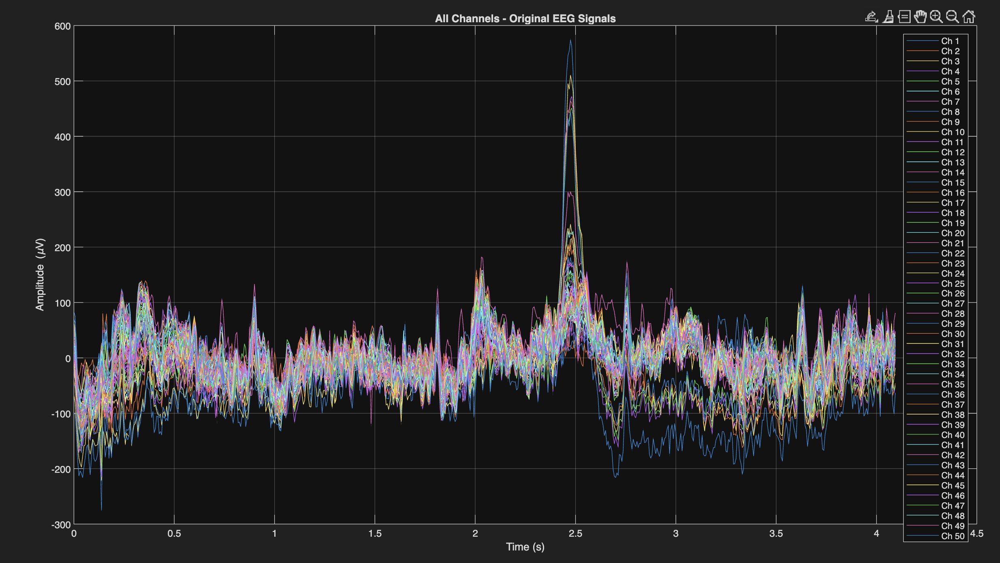
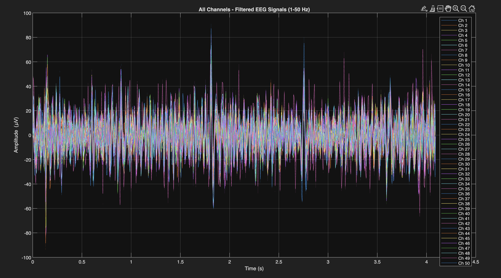
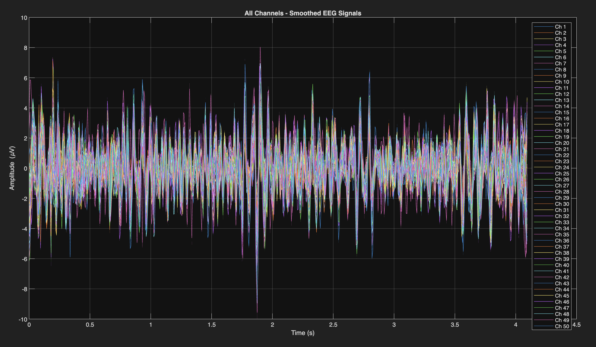
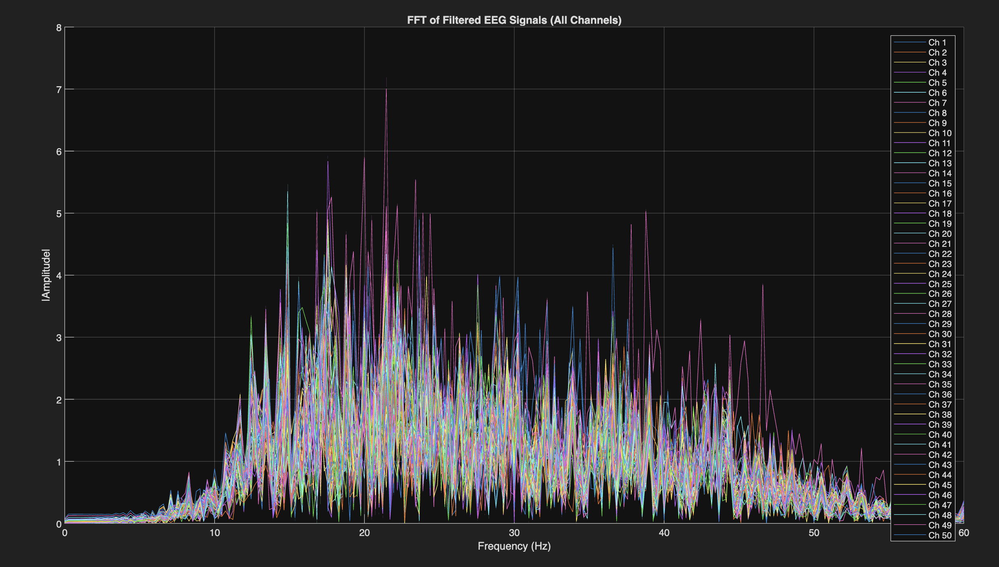
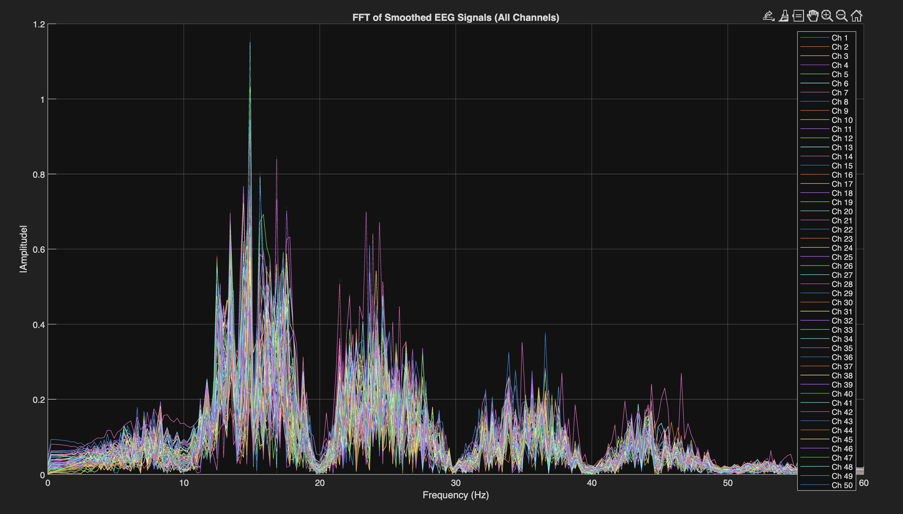
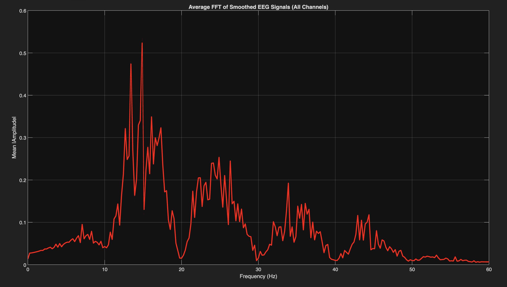
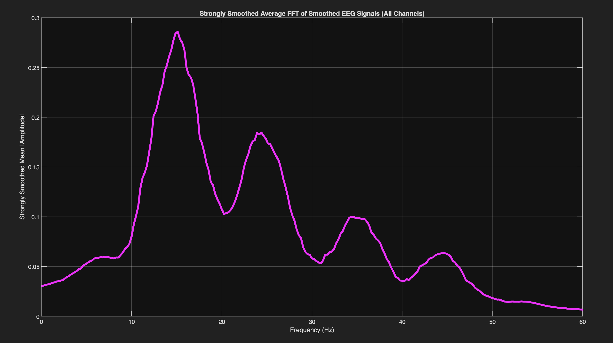
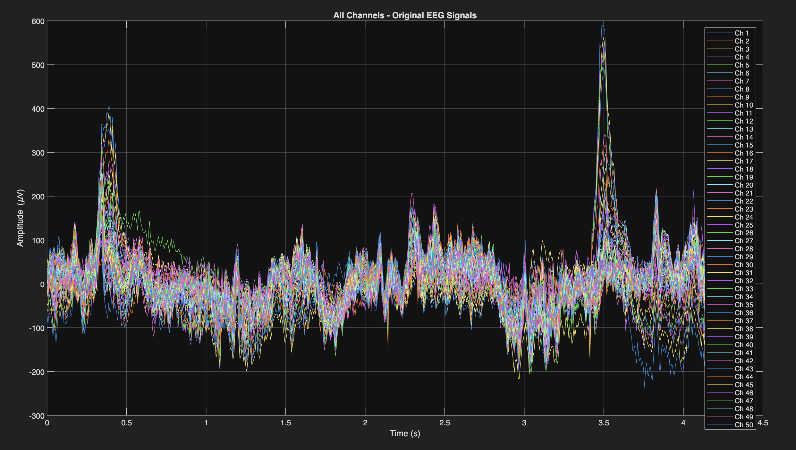
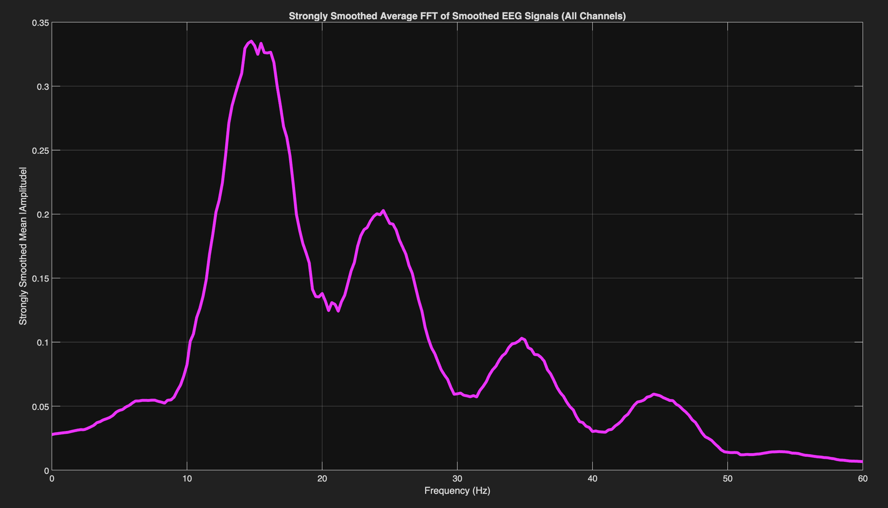

Comprehensive single file view 7 plots from raw signal through averaged and smoothed FFT
After initial signal exploration it became clear that the motor relevant signal lives primarily in the beta band 13 to 30 Hz and lower gamma 30 to 80 Hz. The resting alpha 8 to 13 Hz and delta theta 0.5 to 8 Hz are less diagnostic for distinguishing motor imagery classes. Raising the lower cutoff to 14 Hz focuses all analysis on the bands most likely to carry class discriminating information.
This script reads .set files so the dataset to use here is
EEG Classification SetFormat.zip
on Zenodo. This contains the organized segment classes but not the Eyes Open or Eyes Closed baselines which were originally .edf recordings that never needed segmenting so they were never converted into .set format alongside the segments.
To run this on a specific segment add the full EEG_Classification folder and all its subfolders to your MATLAB path then navigate into the class folder containing the file you want before running the script. For example to look at S001R03_segment_006_T1.set enter the Task1_Real_Left_Fist folder in MATLAB and run 06_seven_plot_single_file.m from there.
1. Original signal all 64 channels 2. Filtered 14 to 50 Hz 4th order Butterworth 3. 100 ms moving average smoothed 4. FFT of filtered signal all channels overlaid 5. FFT of smoothed signal 6. Mean FFT across all 64 channels 7. Plot 6 with an additional 5 Hz moving average on the frequency axis to produce a smooth spectral envelope
% Smooth the average FFT over a 5 Hz window for a clean envelope
freq_resolution = f(2) - f(1);
fft_smooth_window_hz = 5;
fft_smooth_window_pts = round(fft_smooth_window_hz / freq_resolution);
avg_fft_smoothed = movmean(avg_fft, fft_smooth_window_pts);
plot(f, avg_fft_smoothed, 'm', 'LineWidth', 3);
Plot 7 was added because the raw average FFT is still noisy enough that broad spectral trends are hard to read visually. The 5 Hz smoothing window converts it into a smooth envelope that makes it easy to see whether energy is concentrated below 20 Hz, spread evenly, or peaks in the beta band. Task segments consistently showed a different average FFT shape than rest segments which was an encouraging early signal for the CNN approach.








